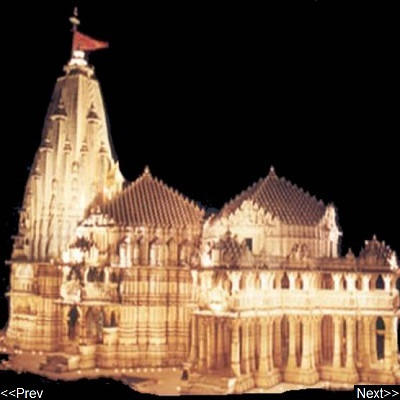

|  |
|
The Somnath Temple The Somnath Temple located in the Prabhas Kshetra near Veraval in Saurashtra, on the western coast of Gujarat, India, is the first among the twelve Jyotirlinga shrines of the god Shiva. It has currently become a tourist spot for pilgrims. Opened: May 1951 Architectural style: Hindu temple architecture Function: Hindu temple |